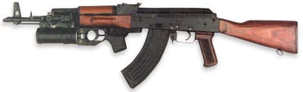

ВОГНЕВА ПІДГОТОВКА - ГП-25
ГП-25. Призначення, загальні відомості. ТТХ. Боєприпаси.
Призначення, загальні відомості. ТТХ. Боєприпаси
40-мм підствольний гранатомет ГП-25 є індивідуальною зброєю та призначений для знищення відкритої живої сили, а також живої сили, що знаходиться у відкритих окопах, траншеях та на зворотних скатах місцевості.
Гранатомет застосовується з 7,62-мм та 5,45-мм автоматами Калашникова.
При приєднанні гранатомету автоматник може вести вогонь як з гранатомету, так і з автомату. Для стрільби з ГП-25 застосовуються постріли ВОГ-25 (ВОГ-25П) з осколковою гранатою, що обладнана головним підірвачем миттєвої дії з самознищувачем.
Стрільба з гранатомета може вестися прямою та непрямою (навісною траєкторією) наводкою.
На гранатометі є механічний приціл відкритого типу, що дозволяє вести прицільну стрільбу на відстані від 100 м до 400м
На прицілі є пристрій для надання стволу гранатомета необхідного кута підвищення при стрільбі по невидимій цілі і шкала для ведення навісної стрільби (при кутах підняттяствола більш 45 град. - по типу міномета) на відстані від 200до 400 метрів.
ТТХ
|
Індекс гранатомету
|
6Г15 |
|
Калібр гранатомету
|
40 мм |
|
Довжина нарізної частини каналу ствола |
98 мм
|
|
Маса гранатомету без затильника
|
1,5 кг |
|
Число нарізів |
12
|
|
Прицільна дальність стрільби:
|
|
|
максимальна |
400 м
|
|
мінімальна навісною траєкторією |
200 м
|
|
Довжина гранатомету
|
323 мм |
|
Бойова швидкострільність
|
4-5 п/хв |
|
Боєкомплект, що переноситься
|
10 пострілів |
|
Індекс гранатомету |
6Г15 |
Боєприпаси
ВОГ-25
Выстрел гранатометный ВОГ-25 (Индекс ГРАУ - 7П17) - осколочный боеприпас для подствольных гранатомётов стрелкового оружия и предназначен для поражения живой силы противника.
- Калибр 40 мм
- Тип оружия ГП-25, ГП-30, ГП-34, РГ-6
- Начальная скорость гранаты 76 м/с
- Масса гранаты 250 г
- Масса ВВ 48 г
- Длина заряда 103 мм
- Время самоликвидации гранаты не менее 14 секунд.
ВОГ-25П
Индекс ГРАУ7П24, шифр «Подкидыш». Выстрел с «подпрыгивающей» осколочной гранатой, оснащённый взрывателем ВГМ-П с вышибным зарядоми пиротехническим замедлителем. Принят на вооружение в 1979 году.
При попадании в преграду выстрел подскакивает и взрывается в воздухе на высоте около 1,5 метров. В сравнении с ВОГ-25, «подпрыгивающий» боеприпас позволяет эффективнее поражать лежащего и находящегося в траншее или окопе противника.
- Калибр 40 мм
- Начальная скорость 76 м/с
- Масса 275 г
- Масса ВВ 42 г
- Длина 125 мм
- Дистанция взведения 10 — 40 м
- Время самоликвидации не менее 14 с
- Средняя высота разрыва 75 см